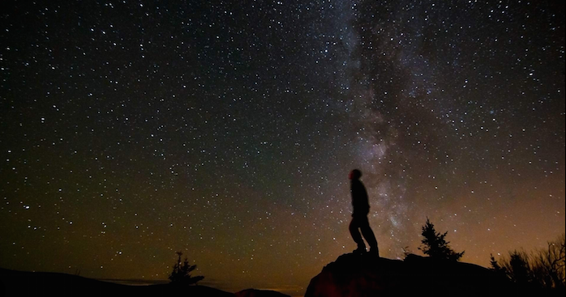

Our Story
Galactic Getaways began as a dream among a group of visionaries who were captivated by the stars, driven by the desire to make the wonders of space accessible to all.
Founded in 2050, at the dawn of commercial space travel, Galactic Getaways quickly grew from a small startup to the industry leader in space tourism, pushing the boundaries of human exploration.
Our first voyage to the Moon sparked a global fascination, as we transported the first-ever group of civilian explorers to walk on its dusty surface, marveling at Earthrise.
Since then, we’ve expanded our horizons, offering journeys to Mars, the Asteroid Belt, and even exploratory flybys of Jupiter’s icy moons. Every voyage is designed not just as a vacation, but as an opportunity to rediscover our place in the cosmos.
Our pioneering spirit, rooted in the belief that space belongs to everyone, has fueled our mission to make the impossible possible—bringing adventure seekers to the final frontier and beyond.
Today, Galactic Getaways is a symbol of innovation and excitement. With a fleet of cutting-edge spacecraft and a team of seasoned astronauts, our adventures redefine luxury travel, delivering an experience that blends the thrill of discovery with the comforts of home, all under the stars.
Meet the Team
Behind every Galactic Getaways adventure is a dedicated team of space enthusiasts, engineers, and explorers. Our company was founded by former astronauts, astrophysicists, and luxury travel experts who wanted to create an experience like no other.
Our star team includes:
- Captain Elara Vega: A veteran astronaut with over 20 years of experience, Elara was one of the first people to set foot on Mars. Her extensive knowledge of space exploration ensures that every mission runs smoothly.
- Dr. Orion Kim: An astrophysicist with a passion for discovering new celestial phenomena, Dr. Kim leads our scientific exploration team, offering guests thrilling insights during their journey through the stars.
- Chief Engineer Zara Solis: With a background in aerospace engineering, Zara is responsible for ensuring the safety and cutting-edge performance of our fleet. Her innovations keep Galactic Getaways at the forefront of space travel.
- Ambassador Nova Delgado: Nova, a former NASA communications specialist, ensures that our travelers are well-informed and comfortable from pre-launch briefings to their return to Earth.
Each member of our team is committed to making your journey a once-in-a-lifetime experience. Whether you're gazing at distant galaxies or setting foot on the Moon, rest assured that you're in the hands of the finest space travel experts the galaxy has to offer.